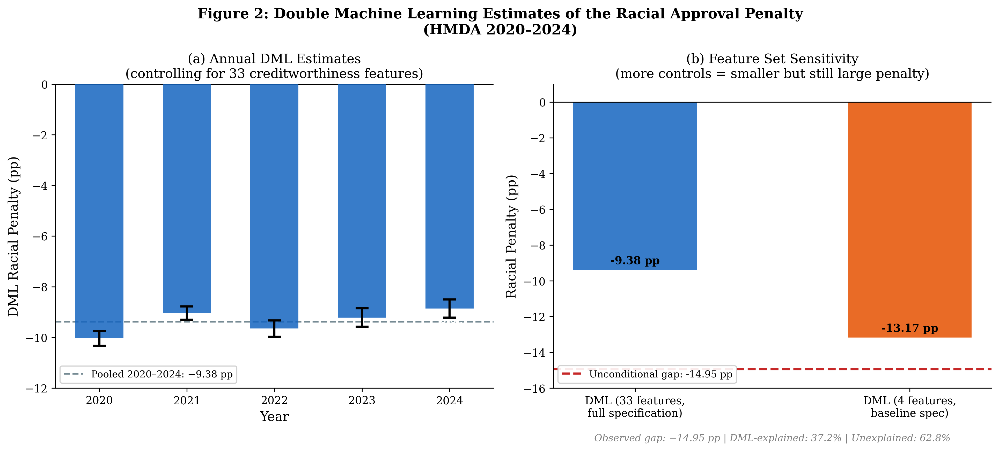
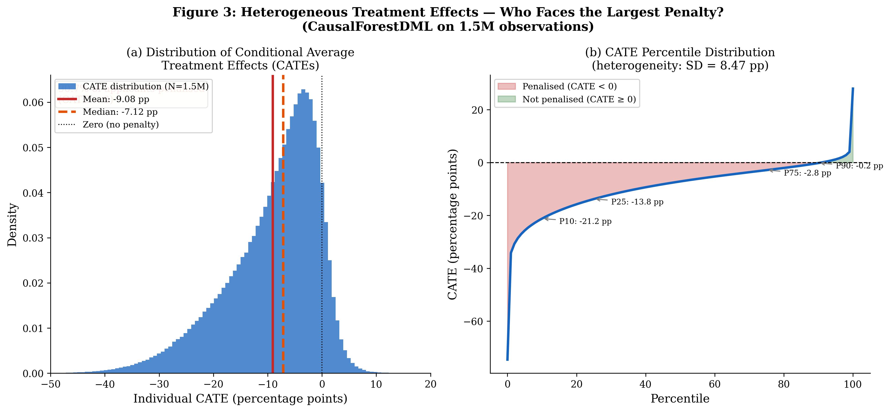
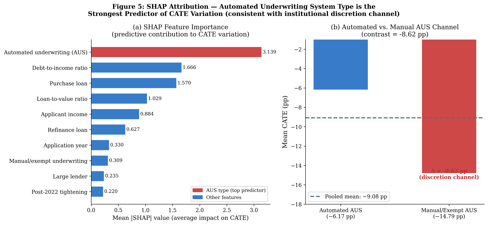

Heterogeneous Racial Approval Differentials in U.S. Mortgage Lending — causal forest double ML on 42.3 million applications.
The gap is driven by human discretion, not automated scoring
Knowing the average approval gap is not enough — averages hide who actually pays. Using methods from modern causal inference (the same family behind clinical-trial analysis), this paper estimates the approval penalty for each applicant profile across 42 million mortgage applications. The distribution is wide: nine in ten Black applicants face some estimated penalty, and the decisive factor is not the applicant but the process — applications handled by human underwriters carry more than double the penalty of those decided by automated systems. That points the fairness question at something a regulator can act on: how applications are routed.
Across 42.3 million HMDA mortgage applications (2020–2024), the raw Black–White approval gap is 14.95 percentage points. The interesting question is causal, not descriptive: how much of that gap survives once genuine creditworthiness is accounted for — and who, specifically, bears it?
I estimate individual-level conditional average treatment effects with double machine learning (LightGBM nuisance models, cross-fitting) and causal forests, adjusting for 33 creditworthiness controls — income, LTV, DTI, loan purpose and type, automated-vs-manual underwriting, and geography. Cross-fitting removes regularization bias so the effect estimate is not contaminated by the prediction models.
The headline estimate is triangulated across five independent identification strategies — DFL decomposition, within-lender fixed effects, RDD at the 80% LTV PMI threshold, difference-in-differences across the 2022–24 tightening, and Manski partial-identification bounds. A race-shuffle placebo yields a 17.9× signal-to-noise ratio; the DR-Learner replicates the estimate within 0.15 pp.
A −9.39 pp mean conditional penalty remains after controls — 62.8% of the raw gap is left unexplained by observable creditworthiness. 90.7% of Black applicants face a negative conditional effect, and the penalty is largest under manual underwriting (−14.8 pp) versus automated systems (−6.2 pp), implicating human discretion over algorithmic scoring as the dominant channel.
Conditional approval penalty by underwriting channel
Bar length = size of the estimated Black–White differential (all negative). The channel, not the applicant, is decisive.



Level treated as an upper bound (no credit scores in HMDA); the channel contrast is the robust object.
It points the fairness question at an actionable mechanism — lender-controlled routing and handling of applications — rather than at applicant characteristics. A regulator can act on how applications are routed; an applicant cannot.